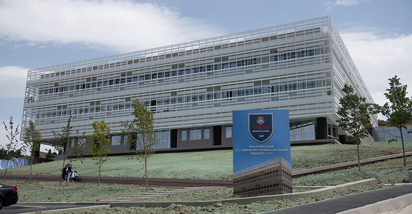
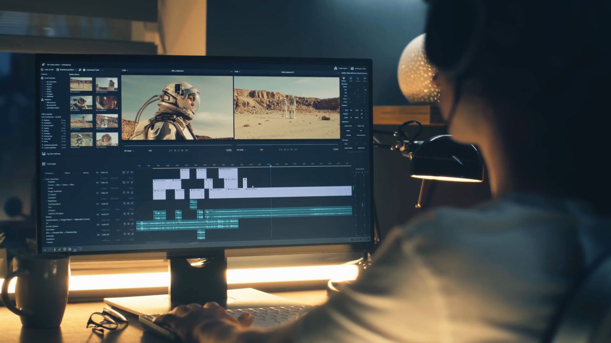
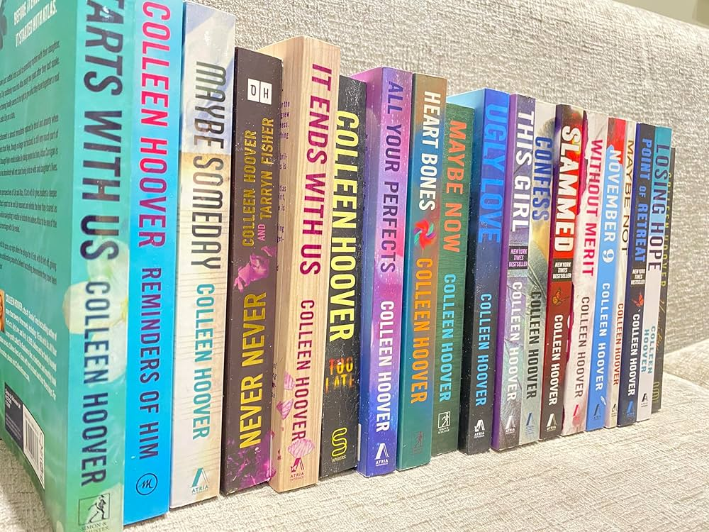
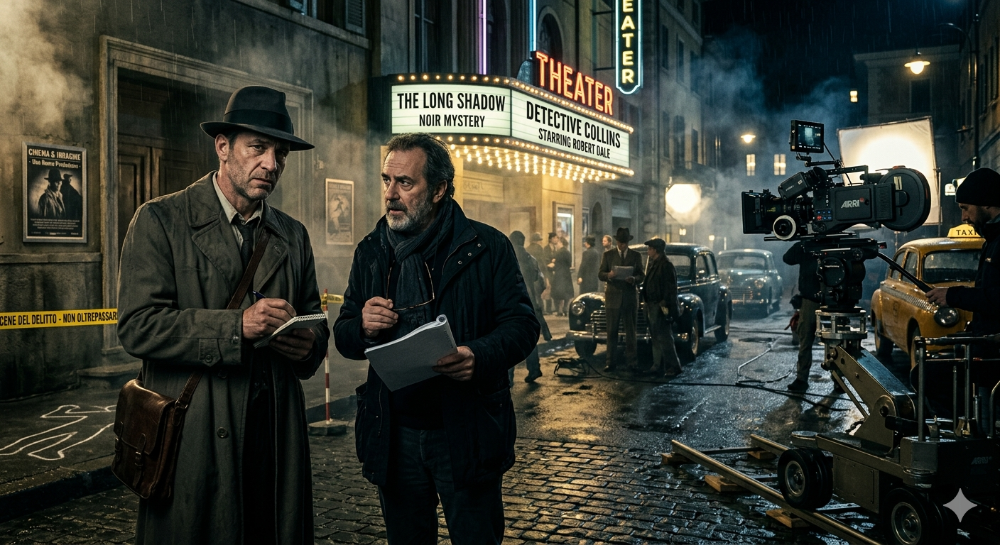

La mia presentazione
Studentessa di Informatica — IIS "Marconi Pieralisi", Jesi
Cinque anni all’indirizzo Informatica, tra codice, progetti e passioni che continuano a crescere.

Dati Identificativi
Nome e Cognome: Ada Ugo Praise Ezeala
Età: 19 anni
Residenza: Jesi (AN)
Classe: 5ª CM — A.S. 2025/2026
Scuola: IIS "Marconi Pieralisi" di Jesi
Indirizzo: Informatica e Telecomunicazioni
Chi sono
Vivo a Jesi e sono una persona curiosa, costantemente motivata a mettermi in gioco: mi appassiona comprendere il funzionamento delle cose e trovare soluzioni per migliorarle. Il mio percorso è iniziato con una forte passione per la grafica, dalla cura dei dettagli visivi all'editing di immagini,che nel tempo si è evoluta in un interesse strutturato per l'informatica e lo sviluppo di applicazioni web responsive. In questo ambito riesco a unire perfettamente creatività e tecnologia.
Questa passione è cresciuta costantemente, spingendomi a progettare un futuro professionale nel settore IT e nell'innovazione tecnologica. Fondamentale in questo percorso è stato il supporto delle persone che mi circondano: la mia famiglia, gli amici e i compagni di studi.
Il mio percorso di studi
Ho frequentato la scuola primaria e media a Jesi, poi ho scelto l’IIS Marconi Pieralisi perché sentivo già da tempo un forte interesse per il mondo digitale e desideravo una scuola che mi permettesse di acquisire competenze pratiche oltre alla preparazione teorica. Nel triennio ho approfondito programmazione, basi di dati, reti e progettazione software, scoprendo ambiti che mi affascinano particolarmente, come l’intelligenza artificiale e la cybersecurity.
Dopo il diploma sono sicura di voler proseguire gli studi universitari, anche se sono ancora indecisa tra Informatica e Giurisprudenza. L’ambito legale mi ha sempre affascinato e ho avuto modo di approfondirlo soprattutto nei primi due anni del mio percorso scolastico. Allo stesso tempo, la passione per la tecnologia e per l’informatica continua a essere una parte importante del mio futuro.


Uno sguardo al futuro
Guardando al domani, il mio obiettivo è traccie un percorso unico che possa fondere la logica della giurisprudenza, la protezione della cybersecurity e la forza comunicativa della grafica. Mi affascina l'idea di applicare queste competenze in ambiti apparentemente distanti ma fortemente interconnessi: dalle indagini di polizia nell'informatica forense — dove l'analisi visiva e la sicurezza dei dati sono fondamentali per la giustizia — fino al settore dell'intretruzioni e dei media, come le aziende di cartoni animati per bambini, dove la tutela del diritto d'autore e la blindatura dei server grafici contro la pirateria sono oggi cruciali. Che si tratti di difendere la proprietà intellettuale di una storia animata o di ricostruire una prova digitale, voglio che la mia tecnologia sia uno strumento sicuro, etico e visivamente accessibile.
Le mie passioni
La scuola occupa una parte importante delle mie giornate, ma non è tutto. Ci sono alcune attività che, fuori dall'aula, mi aiutano a ricaricare le energie e raccontano la mia personalità: il video editing, la lettura e il cinema.
3.1 Video Editing e Creatività
Fin da piccola sono rimasta affascinata dal potere delle immagini. Mi piace raccogliere clip, tagliare, montare e curare la post-produzione per dare ritmo e struttura a un racconto visivo. È una passione che unisce la precisione tecnica nell'uso dei software alla creatività pura, e mi dà molta soddisfazione vedere come file separati possano trasformarsi in una storia fluida e Coinvolgente.

3.2 Lettura — Romanzi
Leggere è per me il modo migliore per esplorare mondi diversi e staccare dalla routine quotidiana. Amo in particolare i romanzi, che mi permettono di immergermi in narrazioni profonde e di sviluppare empatia verso i personaggi. Credo che una buona lettura sia un ottimo allenamento non solo per l'immaginazione, ma anche per la capacità di concentrazione e di attenzione ai dettagli.

3.3 Cinema e Film d'Investigazione
Mi piace guardare film di qualunque genere, ma ho una forte preferenza per le storie d'investigazione e i gialli. Trovo estremamente stimolante seguire la logica delle indagini, raccogliere gli indizi disseminati nella trama e cercare di risolvere il mistero prima che venga rivelato il finale. In un certo senso, trovo una forte analogia tra il lavoro di un detective e il "debugging" del codice informatico: in entrambi i casi serve unire i pezzi del puzzle con logica, intuito e spirito di osservazione.
